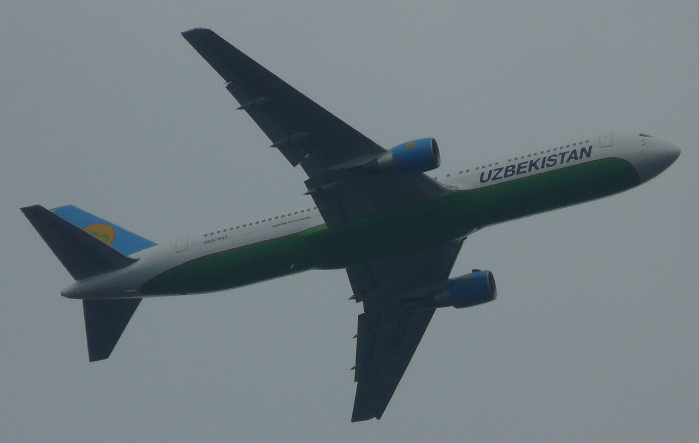

Создание «Узбекистон хаво йуллари» (1992): национальная авиакомпания независимого государства
Национальная авиакомпания «Узбекистан хаво йуллари» была создана 28 января 1992 года и 31 мая 1992 года приняла на себя деятельность узбекского подразделения «Аэрофлота». Она одной из первых на территории бывшего СССР перешла на самолёты западного производства: в 1993 году получила первые Airbus A310-300 и открыла рейсы во Франкфурт и Бангкок. База — Ташкент (ныне Международный аэропорт Ташкент имени Ислама Каримова). Позже парк обновлялся самолётами Boeing 767, а затем Boeing 787-8 (первый 787 — август 2016). Авиакомпания стала одним из символов воздушной связи независимого Узбекистана с миром. По официальным и открытым источникам.

Независимость строится не только флагом и гербом, но и практическими институтами, связывающими государство с миром. Один из таких институтов — национальная авиакомпания. Создание «Узбекистан хаво йуллари» было одним из первых шагов молодого государства к тому, чтобы взять прямую воздушную связь с миром в свои руки. Ниже эта история изложена только по фактам.
Создана: 28 января 1992 года
Национальная авиакомпания «Узбекистан хаво йуллари» была создана 28 января 1992 года — через несколько месяцев после провозглашения независимости Узбекистана. 31 мая 1992 года она полностью приняла на себя деятельность и парк узбекского подразделения «Аэрофлота». Так страна получила собственного национального перевозчика.
Советское наследие: старый парк
В первые годы парк авиакомпании состоял в основном из самолётов советского производства, оставшихся от «Аэрофлота». Перед новым перевозчиком стояли две задачи: без перерывов сохранить внутренние рейсы и одновременно модернизировать парк, чтобы открывать международные маршруты.

Переход на западные самолёты (1993)
В 1993 году «Узбекистан хаво йуллари» добавила первый западный самолёт — Airbus A310-300 — шаг, который был одним из первых среди перевозчиков бывшего СССР. С новыми самолётами компания смогла открыть дальние маршруты, такие как Франкфурт и Бангкок. Это напрямую связало молодое государство с Европой и Азией.
Расширение парка
Авиакомпания последовательно обновляла парк: в конце 1995 года были заказаны Boeing 767-300ER, позже добавились Boeing 757 и Ил-114. В августе 2016 года авиакомпания получила свой первый Boeing 787-8 Dreamliner. Главная база всех международных рейсов — Ташкент (ныне Международный аэропорт Ташкент имени Ислама Каримова).
Почему это важно в истории независимости
Создание национальной авиакомпании было практическим признаком строительства независимого государства: самостоятельное управление своим воздушным пространством, международными маршрутами и связями с миром. Сегодня авиакомпания служит и ключевым воздушным мостом на родину для миллионов узбеков за рубежом — включая диаспору в США.